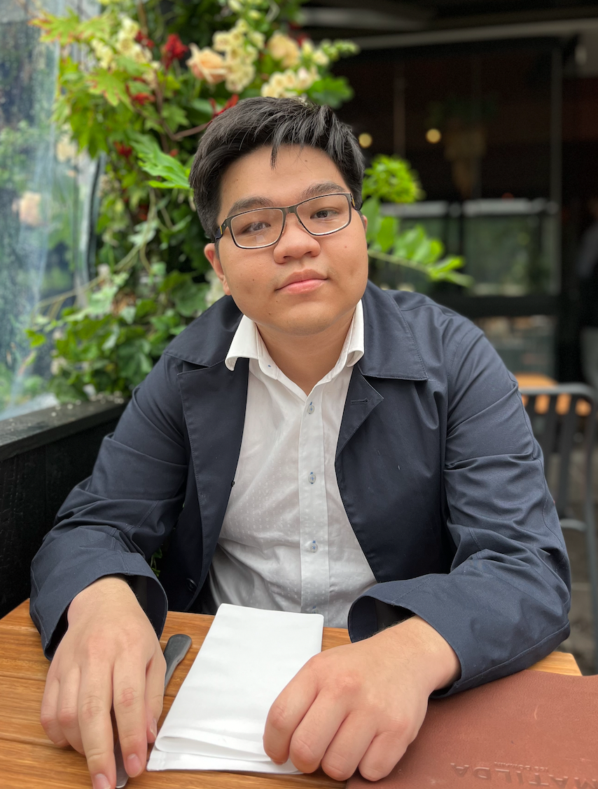
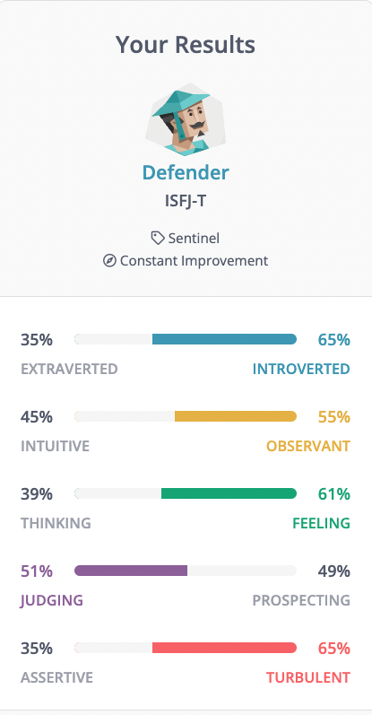

Hi, My name is Quan
scroll down to know more about me
Personal Information 
My name is Quan Bui. I am a first-year RMIT student in Information Technology. I was born in Ho Chi Minh City, Vietnam; so, Vietnamese is my mother language. I moved to Australia when I was 12 years old and have been living here ever since. I received my secondary education at the Indooroopilly State high school, Queensland and Viewbank College, Victoria. I have always been passionate about utilising technology to connect people and enhance education, particularly in developing countries. Apart from my interest in technology, I also enjoy music, cooking, photography, planes, trains, and video games in my free time. I love chatting with friends and learning more about what they are thinking about the world's future.
Interest
What is your interest in IT?
My specific interests in the broad world of IT are mobile and website development. I really like the accessible nature of these 2 platforms, and it can help more people easily explore the endless application that is possible with only a web browser. They don't even require much hardware to run these browsers, which is a huge bonus for people from developing countries.
When did your interest in IT start?
My interest in IT started at a very young age. As a kid, I was very fascinated by how computers work, and I muck around with the computer software a lot. When I got my first computer at the age of 10, I didn't know what coding was. I was very frustrated on why my mom's 6 years old Dell laptop at the time wasn't able to take a photo from its webcam. To resolve these issues, I had my first experience in looking on the internet, looking through software, and it was also my first experience with viruses and malware. The place that I downloaded it from was actually malware. Luckily, 10 year old me shut the computer down immediately by removing the detachable battery and the charger
Was there a particular event or person that sparked your interest?
My uncle was the one that sparked my interest in pursuing a career in IT. He holds a Bachelor's degree in Electronics and IT. He is now a senior data engineer. When I was a kid, he was the first one to show me the magic world of the internet. He gave me my first hardware Raspberry Pis. Every time I go back to my home country, we catch up and share many stories about the current IT status and foresee how IT will advance our world. Thanks to his model role, I have kept self-learning about different topics of the IT field throughout my teenager and shaped my interest in IT.
Why did you choose to come to RMIT?
I chose to become an RMIT student because I think RMIT can help me achieve my career goal in the IT area. Firstly, RMIT has a worldwide reputation for having a very high graduate jobs rate and an excellent connection with the industry. Secondly, the IT program at RMIT is highly ranked around the globe. The recognition will be a stepping stone for RMIT graduates to enter the IT workforce. These align with my study plan to be a skilful IT graduate with industry experience since I want to do an internship before graduating. Thirdly, it's the creative mindset that the university is well known for having, and I'm myself quite creative within designing my program. Taken together, I strongly believe that the IT program at RMIT is the perfect fit for me.
What do you expect to learn during your studies?
The most important thing I expect to learn during my studies will be to learn how to collaborate and be a better communicator since the IT industry is a very project and teamwork-heavy industry. Since the beginning of my journey into IT, I have only worked on a project by myself. It will be fascinating to learn about more collaborative tools and skills that can help me further improve my understanding of the world of IT.
Ideal Job

https://www.seek.com.au/job/56098041?type=standout#sol=ee3b3b8dc85f6335ad44078bfb08846b200a318c
Job Title: Full Stack Developer
Description
A Full Stack Developer is responsible for all aspects of software from the front end to the backend. I really like this position since I can control every process of development, and I can shape the software into the product that I have envisioned. The skills required for this job is varied since there are many coding languages out there, and you can't master all of them in this short amount of time. However, mastering some very popular languages like Javascript, Java, Python, or C++ is the best option since you can create various applications from those languages. Mastering the skills to manage a database is also very important in this job since most applications these days are so heavily data-driven. In this position, it is best to know how to deploy a server on Linux. It is also important to know how to troubleshoot if a server fails.
Skills I have
Currently, I am quite fluent in Javascript and Python and have had some experience working with some database software like MongoDB and SQL.
Skills I need
In the future, I am planning to go deeper into the world of database software and server to further improve the skills that can help me achieve my dream job
Learning Plan
I have set out a plan that in the first 6 months of this year, I would start learning the basic of database like how to structure it in an efficient way and best fit for the application. After the first 6 month, I would spend around a year to master the popular MongoDB software. In my last year, I would try to master the industry standard of SQL.
Personality Profile
Myer's Brigs Personality Test
The result of my 16 Personalities test using the Myers Briggs test showing that I belong to a Defender type. The analysis report suggests that my strength includes being supportive, reliable and patient, being imaginative and observant, enthusiastic, loyal and hard-working and good practical skills. I also possess excellent analytical abilities and well-developed people skills. I found it quite correct that I am receptive to new ideas even though I tend to be kind of conservative in a few topics. These traits suggest that I will be a good team member and others will enjoy my company. It appears that I am a shy person. Thus, it is best to team up with others who are friendly to provide a balance in the team. I need to establish a clear point that saying "no" is an acceptable act when working in the team to avoid the possible taking advantage of by others. This will help me maintain my enthusiasm and confidence. In addition, it is difficult for me to separate personal and impersonal situations and repress my feelings. As such, I appreciate working with a team that praises constructive feedback rather than hard criticisms.
Big Five Personalities Test

The big five personality test measures five personality traits, including openness (O), conscientiousness (C), extraversion (E), agreeableness (A), and neuroticism (N). The results of this test for myself is presented in Figure 2. Since the O trait is more than 50%, it can be interpreted that I am open to new ideas, which agrees with the 16 personalities test result described above. The A trait is the highest percentage obtained in this test, suggesting that I might be a good team player since I consider others' interests rather than neglect others' ideas and feelings. This trait is also in agreement with the Myer Briggs test above. However, I also got the N trait, which tells that negative emotions can easily trigger me. Similar to the 16 personalities test, I should work in a supportive environment with constructive feedback. Besides, I think I need to find a good work/life balance such as doing sports, meditation to help me overcome stresses.
testmycreativity test

The testmycreativity test measures the 8 big aspect of a creative mind which are abstraction, persistence, connection, perspective, complexity, paradox, boldness and curiosity. The result of this test for myself is presented in Figure 3. From the figure, it can be interpreted that I’m not a very creative person compared to the average person, which I can sometimes agree. Since some of the stuff I have done in the past has not been very creative. It also shown that I lack the boldness that a creative person would have, and I can agree with part of the result since I prefer stability and calculated rather than going for all in a project that I don’t see a future in. To more improve on the creative factor of my personality, I should do something that is more creative than my daily routine of youtube and gaming which can be something like learning a new instrument trying to write my own song. This can greatly boost my creative mindset.
Project Idea
Overview
Vietnamese is ranked as a hard language to learn. My project is a Vietnamese language learning web application that incorporates elements of a game like achievement, checkpoints, autosave, progress bar and fun mini-games. This will make the experience of learning a language more satisfying and rewarding for the users. Initially, it will be in the form of a web application. Various tools such as React JS, Application Programming Interface (API), MongoDB and Amazon Web Service will be used to build the project.
Motivation
The motivation of this project stems from my scenario. As an immigrant from Vietnam, settling down in Australia, learning English wasn't a big deal for me because there are loads of very good and reliable English resources online. It wasn't the case for the way around. When my friends want to learn Vietnamese as more people are getting more exposure to Vietnamese culture, I could not recommend them a good and reliable online source that they can easily access unless they get a personal tutor, which can be very costly. I did a Google search and found that they are scary and boring. Therefore, a friendly-user website with fun activities and appealing design will be a solution to this problem.
Project Idea Description
1. Scope
The scope of this project is to make a web application that can help people learn the language using different kinds of methods. It must have an auto-save feature and require a login to save the progress.
2. The main target audience
The main target audience for my project are students and full-time workers wanting to learn a new language in a quick and easy way. Since these demographics don't have a lot of time on their hands, a few design considerations have been made in regards to maximising the effectiveness of the program, such as having autosave features. If they didn't finish a lesson, they could easily jump back to the lesson when they came back to the program
3. The design
The design approach for this project will focus on simplicity and being straightforward. The design can be a little bit cartoony in better capturing the audience's attention. The colour palette will be pastel, which gives a contemporary and modern feel to the software.
4. The platforms
This project is going to be a web application for ease of access for all of the users since not all of them have the same operating system, but all of the modern operating systems have access to a web browser, so a web app is a great choice. This web app is going to be a touch-friendly web app to cater to an increasing number of devices having a touchscreen. The user can access the application just by typing in a URL.
Features
The features for this project are quite similar to a game. When the users first log in the application, they are introduced to the tutorial section that will walk them through how to use the application. After the users have selected the language, they will then have an introductory lesson about the origin and characteristics of the language. After the introductory lesson about the language, they are then taught their first lesson by a penguin which is the mascot of the software and the personal companion for the users throughout the way.
Constraints
There are many constraints in regard to this project. Time is the main concern here, as the project development will only be in 6 weeks and it won't be possible to finish all of the lessons in that time period. Thus, it is anticipated that only about the first 10 lessons will be completed instead of the originally planned 20. Skills are also a constraint since this will be my first project using Amazon Web Service (AWS). So, it will take time to get used to the software.
Project Idea
Tools and Technologies
The tools and technologies being used for this project are all open sources and very popular in the industry. The front-end framework that will run most of the user interface and the animation will be React JS, a Javascript-based framework developed by Meta and been used to develop software such as Netflix, Facebook and Airbnb, to name a few. To handle the back-end for the project, an API that stands for Application Programming Interface will be used as a middle man between the front-end displaying the data and the database storing all the data. The database software that I will be using is MongoDB, a popular JSON based database system. To run the entire project, I will be using Amazon Web Service, a very popular cloud computing service that is very reliable and can easily bring my software into life without using any of my own equipment.
Skill Required
There are 5 main skills that are crucial in building this project. 1. The knowledge on how to create a functional and eyes pleasing website using React JS; 2. The ability to build a substantial and reliable database that will be used to store the database in MongoDB; 3. The ability to create an API (Application Programming Interface) by using NodeJs and MongoDB; 4. The ability to set up and deploy 2 AWS servers: one for the API and another one for the application itself; 5. The ability to link the AWS server IP with a domain.
Outcome
The outcome will create a very user-friendly and intuitive web application that will make it fun and interesting by using interactive games, a companion buddy that can help the users tackle such a hard language like Vietnamese. This project will benefit travellers, business people, exchange students to have no obstacles in conversations with Vietnamese. It also helps the users discover the Vietnamese culture and enrich their life experiences.